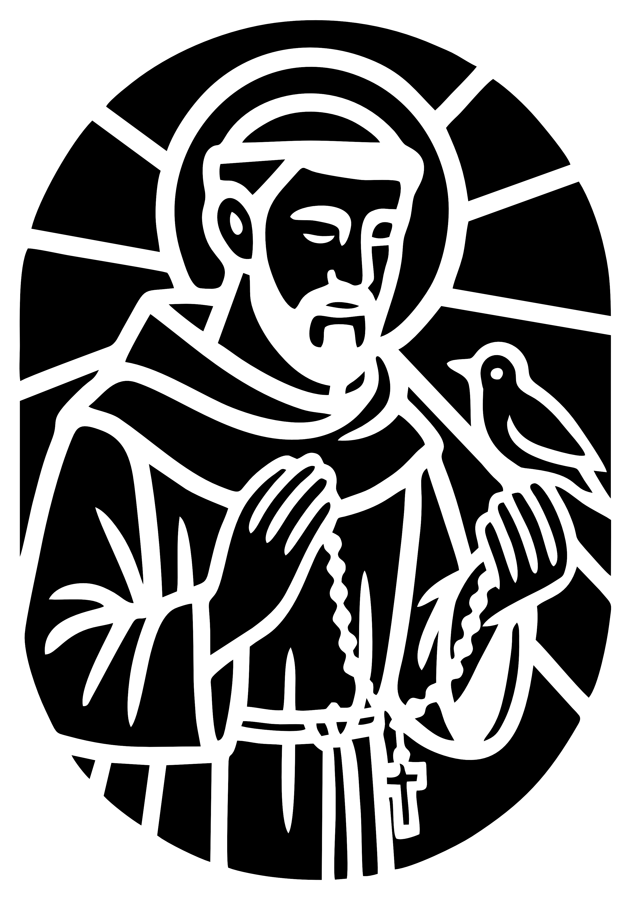
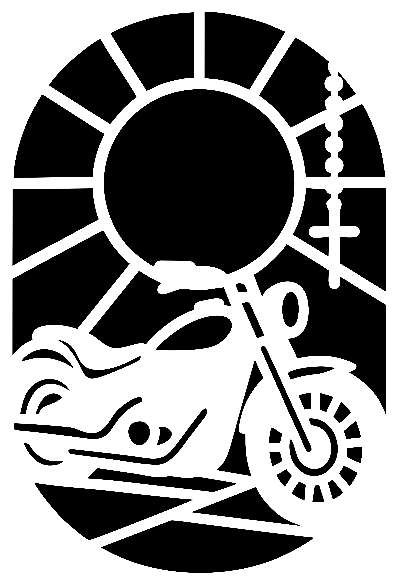
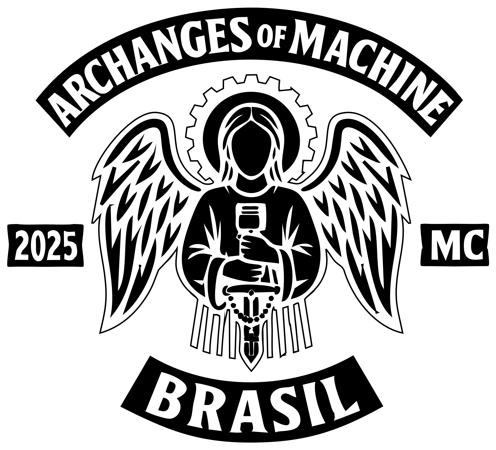
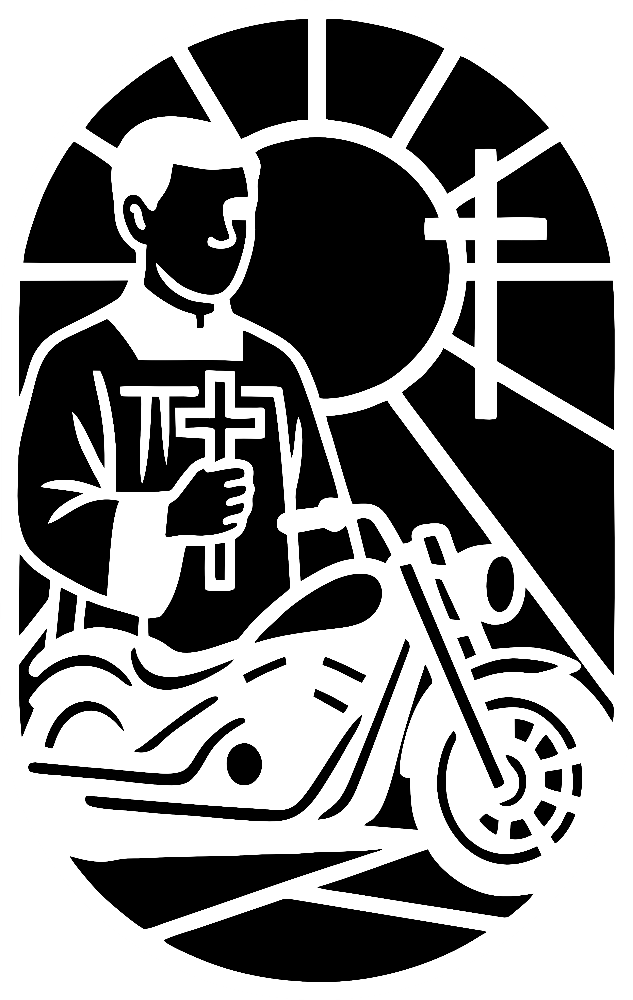

Eventos de 2025
Missão São Francisco
Viagem missionária à comunidade rural de São Bartolomeu, com ações ecológicas, partilha com moradores locais, plantio de árvores e missa campal com bênção das motos.
Terço Noturno sobre Rodas
Motociata espiritual com parada para oração do terço iluminado nas ruas da cidade, visita à Igreja de Nossa Senhora das Dores e confraternização ao fim com canto e partilha.
Encontro dos Arcanjos
Encontro anual do MC com celebrações, bênção dos escapulários, roda de testemunhos e formação espiritual baseada na vida de São Francisco de Assis.
Serviço de Altar sobre Rodas
Membros do MC viajam até paróquias com falta de acólitos e ministros, prestando serviço no altar e apoiando a liturgia em comunidades carentes.